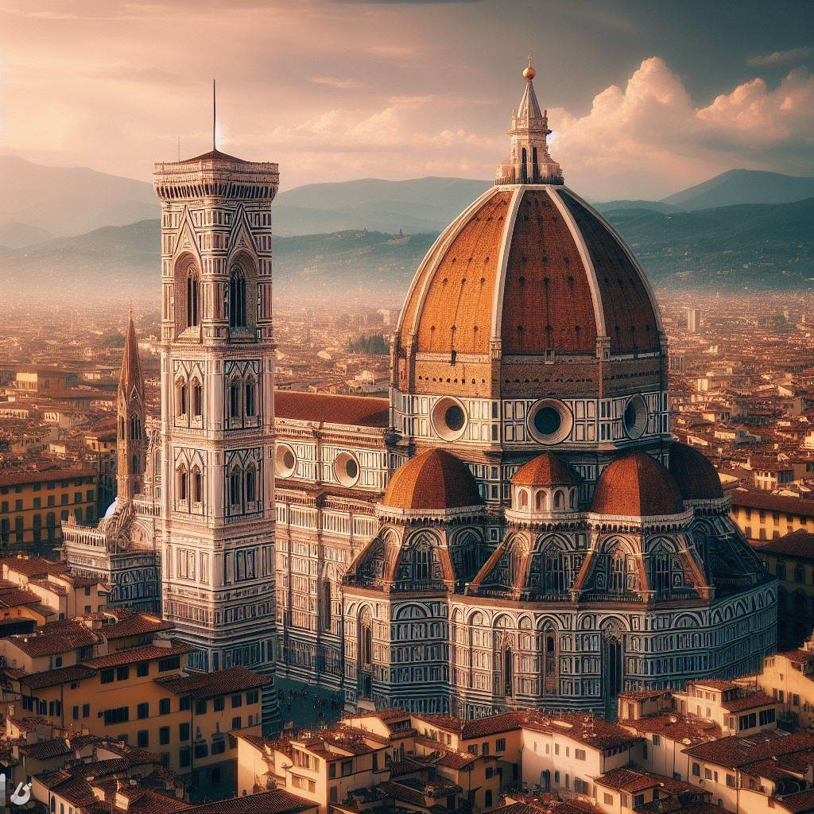

Miért látogassa meg Firenzét?
Firenze Olaszország egyik legcsodálatosabb városa,
amely tele van történelemmel, művészettel és kultúrával. A város a reneszánsz
szülőhelye, és otthont ad Leonardo da Vinci és Michelangelo műveinek a világhírű
Uffizi Galériában. A városban található a híres Ponte Vecchio és a Boboli-kertek
is. Firenze egy olyan hely, ahol az ember belemerülhet a történelembe, és élvezheti a
lassú élet ritmusát.

Firenze
Firenze, Olaszország egyik legnépszerűbb turisztikai célpontja.
A város gazdag történelmi és kulturális örökséggel rendelkezik,
és számos nevezetességet kínál az ide látogatóknak.
Az Ognissanti templom a város egyik legfontosabb műemléke,
amelyet a 13. század közepén alapítottak olyan szerzetesek
részére, akik gyapjú-kikészítéssel és szövés-fonással foglalkoztak.
A San Marco kolostor és múzeum is érdemes meglátogatni, amelynek
építése 1290-ben kezdődött és 1869-ben fejeződött be.
3 napos útiterv
1. nap:
Reggel látogasson el a Milánói Dóm-hoz, amelynek
tetőszerkezete a világ legnagyobb márványborítású építménye.
A dómot 1386-ban kezdték építeni, és csak 500 évvel később
fejezték be. Az épület belső része is lenyűgöző, és érdemes
időt szánni a látogatásra.
A dóm mellett található a Galleria Vittorio Emanuele
II nevű bevásárlóközpont, amely az egyik legrégebbi
bevásárlóközpont Európában. A bevásárlóközpontban található
üzletek között számos luxusmárka is megtalálható.
Délután látogasson el a Teatro alla Scala operaházba,
amelynek előadásai világszerte ismertek. Az operaházban
minden évben megrendezésre kerül az olasz zenei élet egyik
legfontosabb eseménye, a La Scala szezon.
2. nap:
Látogasson el a Pinacoteca di Brera művészeti múzeumba,
amelynek gyűjteménye a középkortól a modern korig terjed.
A múzeum egyik legkiemelkedőbb darabja a Raffaello Sanzio
által festett Mária Mennybemenetele című festmény.
Délután látogasson el a Parco Sempione parkba, amely a város
központjában található, és ahol lehetősége van piknikezni,
sétálni, vagy csak pihenni. A parkban található a Castello
Sforzesco is, amely egykor a Visconti és a Sforza családok
rezidenciája volt.
3. nap:
Látogasson el a Navigli negyedbe, amely Milánó egyik
legizgalmasabb és legvonzóbb negyede. A negyedben található a
Naviglio Grande nevű csatorna, amely mentén számos étterem és
bár található. A negyedben található a Darsena nevű kikötő is,
amely a középkorban a város kereskedelmi központja volt.
Délután látogasson el a Cimitero Monumentale temetőbe, amely
Milánó egyik legnagyobb és legismertebb temetője. A temetőben
számos híresség nyugszik, köztük a Nobel-díjas író, Salvatore Quasimodo.